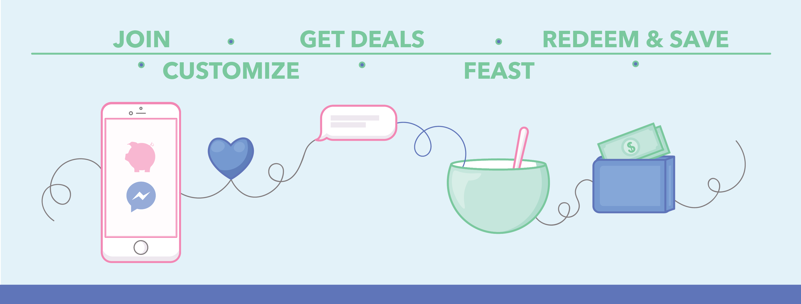
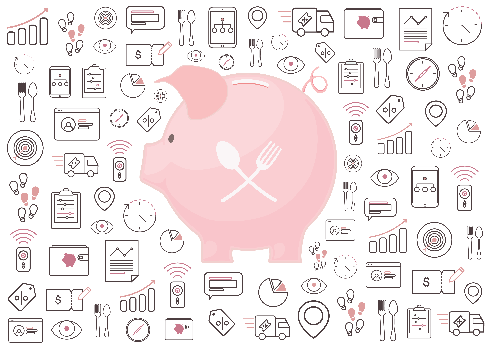

Feaster
In May of 2016, I began working with Feaster, a digital marketing platform in the restaurant industry that provides customers with personalized, preference-based offers on local food and drink in real-time. Feaster is a startup that came out of UC Berkeley, and my main role was to create all of the branding and marketing material for the company. I additionally designed and engineered the user experience of landing pages and dashboards. Below are some of the brand guidelines and illustrations I created for Feaster and that are currently being used.


